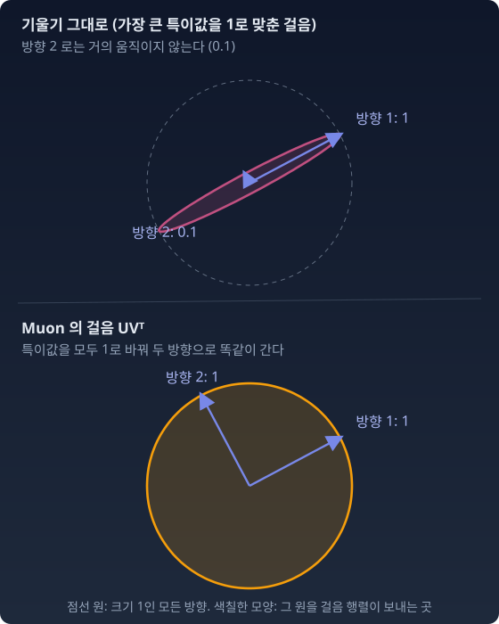

Muon: 스펙트럼 노름 아래 가장 가파른 걸음
“μP는 학습률과 초기화를 폭에 맞춰 조정했다. 그런데 한 층의 기울기 행렬 안에서도 방향마다 크기가 다르다면? 어떤 방향은 기울기가 거대하고 어떤 방향은 미미하다면, 학습률 하나로는 그 불균형을 못 고치지 않나?”
비유
등산과 등고선 — μP는 "지도의 축척을 보정하는 것"이었다. 지도 위 1cm가 폭과 상관없이 같은 실제 변화가 되도록. Muon은 다른 접근이다. “한 걸음이 모든 주된 방향으로 같은 크기가 되게 하는 것.”
산을 오르는데 동쪽은 절벽이고 서쪽은 완만하다. 보통의 경사하강법은 절벽(기울기가 큰 방향)으로 확 쏠린다. Adam은 좌표마다 크기를 맞춰 쏠림을 줄이지만, 좌표축이 아닌 방향의 상관은 보지 못한다. Muon은 행렬 전체의 주된 방향(특이 방향)마다 같은 크기로 간다.
숫자로 먼저: 방향마다 걸음의 크기
한 층의 기울기 행렬을 특이값 분해 G = UΣVᵀ 로 쪼갰다고 하자(돌리기 · 축마다 늘이기 · 돌리기. Σ 의 대각선이 특이값이고, U 와 V 의 열이 그 방향들이다). 특이값이 10, 1, 0.05 라면 기울기는 첫째 방향으로 거대하고 셋째 방향으로는 거의 없다. 이 기울기를 가장 큰 특이값이 1 이 되게 줄여 그대로 걸으면, 방향마다 걸음의 크기는 1, 0.1, 0.005 다. Muon 은 특이값을 모두 1로 바꾼 UVᵀ 로 걷는다.
| 특이 방향 | 기울기의 크기(특이값) | 그대로 걷기(가장 큰 값을 1로) | Muon |
|---|---|---|---|
| 1 | 10 | 1 | 1 |
| 2 | 1 | 0.1 | 1 |
| 3 | 0.05 | 0.005 | 1 |
두 방향만 그리면 이렇다. 크기가 1 인 모든 방향(점선 원)을 걸음 행렬이 어디로 보내는지 그렸다.

수학적 핵심
한 층의 기울기 행렬 G 가 있을 때, 스펙트럼 노름으로 크기를 제한한 걸음 가운데 손실을 가장 빨리 줄이는 것은
특이값 Σ를 전부 1로 바꾼 것이다. 기울기의 "방향 정보"만 남기고 "크기 정보"를 지운다. 스펙트럼 노름과 핵노름이 서로 쌍대(한쪽이 정해지면 다른 쪽이 정해지는 짝)라서 최솟값이 −‖G‖* 로 나온다. 정해 둔 자로 잰 크기가 같은 걸음 가운데 손실을 가장 많이 줄이는 걸음을 최급강하(가장 가파른 내리막)라 부르니, Muon 의 걸음은 스펙트럼 노름 아래의 최급강하다.
μP와의 관계
같은 질문의 두 면이다.
μP는 폭에 따라 학습률과 초기화를 미리 정한 규칙으로 줄인다. 지키려는 것은 "특징이 폭과 무관하게 Θ(1)로 변하도록"이고, 규칙을 학습 전에 정해 두는 처방이다.
Muon은 업데이트의 특이값을 모두 1로 바꾼다. 지키려는 것은 "스펙트럼 노름으로 잰 한 걸음을 일정하게"이고, 매 스텝 기울기의 방향에 반응한다.
번스타인과 뉴하우스는 이 둘을 한 틀에 넣었다. “Old Optimizer, New Norm”(2024)에서 그들은 지수이동평균을 끈 옵티마이저들이 각각 특정한 노름 아래의 최급강하로 읽힌다고 보였다. 지수이동평균을 끈 Adam 은 기울기의 부호만 남긴 걸음 −lr·sign(G) 이고, 이것은 좌표마다의 최댓값으로 재는 ℓ∞ 노름 아래의 최급강하다. 누적을 끈 Shampoo 는 스펙트럼 노름 아래의 최급강하다. “Modular Duality in Deep Learning”(2024)에서는 기울기를 “쌍대 벡터”(가중치와 같은 공간의 화살표가 아니라, 가중치의 변화를 받아 손실의 변화라는 숫자를 내놓는 쪽)로 보고, 층마다 그 층이 하는 일에 맞는 노름을 정해 기울기를 가중치 공간의 걸음으로 바꾸자(쌍대화, dualize)고 제안했다. 선형층에 스펙트럼 노름을 붙이고 fan_out/fan_in 배율을 넣으면 μP의 스펙트럼 스케일링이 나오고, 쌍대화 변환은 G ↦ UVᵀ, 곧 누적 없는 Shampoo가 된다. 그들은 μP와 Shampoo를 이 쌍대화 변환의 부분적 근사라고 불렀다. (Muon 블로그도 번스타인이 "스펙트럼 노름 아래의 최급강하"를 먼저 이야기했다고 적었다.)
"왜 자가 필요한가"를 아는 사람에게 μP와 Muon은 같은 질문의 두 가지 답이다: “파라미터 공간에서 공정한 한 걸음이란 무엇인가?” 그리고 그 답은 "어떤 노름으로 재느냐"를 먼저 정해야 나온다. 피셔 계량은 그 노름 후보 가운데 분포 공간이 직접 주는 하나다.
더 나아간 시도
Muon은 모든 특이값을 1로 만든다 — 등방적(isotropic, 모든 방향에 똑같이)이다. 그런데 피셔 계량은 방향마다 눈금이 다른 자다. 이퀄라이저의 슬라이더마다 소리를 바꾸는 민감도가 다르듯이. 정규분포 N(μ, σ²) 만 해도 I = diag(1/σ², 2/σ²) 로, μ 방향과 σ 방향의 눈금이 다르고 σ 가 작을수록 두 눈금이 함께 촘촘해진다.
FISMO(Fisher-Structured Momentum-Orthogonalized, 쉬·옌·장(Chenrui Xu, Wenjing Yan, Ying-Jun Angela Zhang), 2026년 1월)는 이 지점을 겨눈다. Muon의 엄격한 등방성이 기울기 스펙트럼에 담긴 곡률 정보(손실을 두 번 미분한 값에서 오는, 방향마다 다른 가파름)를 버린다는 문제의식에서, 업데이트를 크로네커 조각으로 만든 피셔 계량 아래의 신뢰 영역 문제(한 걸음이 나갈 수 있는 범위를 미리 정해 두고 그 안에서 가장 좋은 걸음을 찾는 문제)로 세우고 모멘텀 직교화와 피셔 구조의 전조건을 결합했다. "피셔 계량 + Muon의 직교화"의 결합이다.
이 방향은 아직 활발히 연구 중이다. 우리가 배운 도구 — 피셔 계량, 스펙트럼 구조, 자연 기울기 — 가 최신 옵티마이저 연구의 뼈대에 깔려 있다는 것이 이 장의 메시지다.
수확
“μP는 스케일링 규칙으로, Muon은 직교화로, 같은 질문에 답한다: ‘파라미터 공간에서 공정한 한 걸음이란 무엇인가?’ 답은 어떤 노름으로 재느냐에 달려 있고, 피셔 계량은 그 노름을 분포 공간에서 가져오는 방법이다. 폭이 바뀌면 같은 걸음이 출력에 만드는 변화가 바뀐다. μP는 층마다 그 변화를 폭과 무관하게 맞추고, Muon은 스펙트럼 노름으로 잰 걸음을 일정하게 만든다. 분포의 공간에서 가져온 자가 현실의 문제에서 작동한다.”
인물 이야기 — Keller Jordan과 「속도 기록」이라는 시험대
새 옵티마이저가 AdamW 를 크게 이겼다는 논문은 많았다. 그 가운데 널리 쓰이게 된 것은 드물다. 켈러 조던(Keller Jordan)은 2024년 12월에 쓴 블로그 글에서 이 상황을 「AdamW 를 이겼다고 주장했다가 끝내 아무도 쓰지 않게 된 옵티마이저들의 무덤」이라고 불렀다. 그가 꼽은 가장 흔한 까닭은 비교 대상인 AdamW 를 충분히 조율하지 않은 채 견준 것이었다.
조던이 Muon 을 내놓은 자리는 논문이 아니라 공개 속도 경주였다. 작은 언어모델(NanoGPT)을 FineWeb 데이터의 검증 손실 3.28 까지 가장 빨리 학습시키는 경주와, CIFAR-10 이미지 분류를 정확도 94% 까지 가장 빨리 학습시키는 경주다. 2024년 10월 15일, 옵티마이저를 AdamW 에서 Muon 으로 바꾼 기록이 언어모델 경주의 학습 속도를 35% 끌어올렸다. CIFAR-10 기록은 A100 GPU 기준 3.3초에서 2.6초가 되었다.
조던은 이 경주를 증거의 기준으로 내세웠다. 경주에서는 직전 기록이 곧 비교 대상이고, 인기 있는 경주라면 그 기록은 이미 많은 사람이 조율해 놓았다. 또 Muon 은 한 스텝이 AdamW 보다 느리므로, AdamW 를 Muon 만큼 효율적으로 만드는 설정이 있다면 누군가 Muon 을 빼고 AdamW 로 돌아가 새 기록을 세웠을 것이다. 블로그를 쓸 무렵까지 그 뒤에 나온 새 기록 열두 번은 일곱 명이 세웠고, 모두 Muon 을 썼다. 「나(조던)를 믿을 필요 없이, AdamW 를 잘 조율할 줄 알고 새 기록을 세우고 싶은 사람이 있다는 것만 믿으면 된다」는 것이 그의 논리였다.
그는 글 끝에 답하지 못한 물음도 적었다. 파라미터 200억 개, 토큰 1조 개가 넘는 학습에서도 통할까? 그 답은 이듬해 다른 회사의 큰 모델 학습에서 나왔다.
문제 11. 보너스 점수 나누기
조원 셋의 기여도가 3, 1, 0.5 다. 조장이 보너스 b₁, b₂, b₃ 를 나눠 주고, 조의 평가 점수는 기여도와 보너스를 곱해 더한 3b₁ + b₂ + 0.5b₃ 로 매겨진다. (가) 규칙이 「한 사람에게 최대 1점」이면 어떻게 나눠야 평가 점수가 가장 큰가? (나) 규칙이 「보너스 제곱의 합이 1 이하」면? (다) 두 규칙 모두에서 「가장 많이 기여한 사람에게 몰아주기」와 견주어라.
함께 풀기

제일 잘한 사람한테 몰아주는 게 제일 크죠. 첫째에게 1점 주면 3점이요.

(가)의 규칙에서 둘째와 셋째에게 주는 걸 막는 게 있어요?

없네요. 한 사람 상한만 있으니까 다 1점씩 주면 3 + 1 + 0.5 = 4.5. 몰아줄 이유가 없었어요.

(나)는 달라. 제곱합이 묶여 있으면 한 사람한테 더 주는 만큼 남의 몫이 줄어. 이때는 기여도에 비례해서 주는 게 최선이고, 기여도 벡터의 길이 √(9 + 1 + 0.25) = 3.20 으로 나눈 (0.94, 0.31, 0.16) 이야. 평가 점수는 3.20.
같은 기여도인데 규칙에 따라 가장 좋은 분배가 「모두 똑같이」와 「기여도에 비례」로 갈리네요. 몰아주기는 둘 다에서 3 이라 지고요.
문제 12. 스펙트럼 노름 아래 가장 가파른 걸음
기울기 행렬 G = UΣVᵀ 가 주어졌다. (가) 특이값이 3, 1 인 2 × 2 기울기에서 세 후보 −G/‖G‖₂, −G/‖G‖F, −UVᵀ 가 모두 ‖ΔW‖₂ ≤ 1 을 지키는지 확인하고 ⟨G, ΔW⟩ = tr(GᵀΔW) 를 견주어라. (나) 일반적으로 ‖ΔW‖₂ ≤ 1 인 ΔW 가운데 ⟨G, ΔW⟩ 를 가장 작게 하는 것이 −UVᵀ 임을 보여라.
함께 풀기
벡터였으면 −G/‖G‖ 잖아요. 위 식은 −UVᵀ 라는데, −G/‖G‖₂ 도 스펙트럼 노름이 딱 1이에요. 행렬도 이렇게 하면 되지 않아요?
그 ΔW 로 내적 값을 계산해 봐요.
⟨G, −G/‖G‖₂⟩ = −‖G‖F²/σmax = −Σσᵢ²/σ₁ 이요. 특이값 3, 1 이면 −(9 + 1)/3 = −3.33. −G/‖G‖F 는 스펙트럼 노름이 3/√10 ≈ 0.95 라 공 안에 있고, 내적은 −‖G‖F = −3.16.
−UVᵀ 를 넣으면 −tr(VΣUᵀUVᵀ) = −tr(Σ) = −Σσᵢ 야. 여기서는 −4. σ₁ ≥ σᵢ 니까 Σσᵢ ≥ Σσᵢ²/σ₁. −UVᵀ 가 더 작아.

아, 벡터의 ℓ₂ 공에서만 −G 방향이 최선이었던 거네요. 공 모양이 바뀌면 답도 바뀌고.
서연 학생, −UVᵀ 가 최소라는 건 어떻게 보장해요?
음… ΔW 의 특이값이 다 1 이하면 tr(GᵀΔW) ≥ −Σσᵢ 라는 걸 보여야 하는데요. 코시–슈바르츠로 하면 |tr(GᵀΔW)| ≤ ‖G‖F‖ΔW‖F 인데, ‖ΔW‖F 가 √(랭크)까지 커질 수 있어서 경계가 느슨해요.
이 방식으로는 Σσᵢ 가 안 나와요.
대각합을 G 의 특이 기저로 풀어 써 봐요.
tr(GᵀΔW) = tr(VΣUᵀΔW) = Σᵢ σᵢ·(uᵢᵀΔW vᵢ). 그리고 |uᵢᵀΔW vᵢ| ≤ ‖ΔW‖₂ ≤ 1 이니까 Σᵢ σᵢ·(…) ≥ −Σσᵢ. 등호는 uᵢᵀΔW vᵢ = −1 일 때, ΔW = −UVᵀ 이면 돼요.

스펙트럼 노름의 쌍대가 핵노름이라는 대각합 쌍대성이 바로 이거네요. 선형대수 시간에 "ℓ∞ 의 쌍대는 ℓ₁"을 행렬 특이값에 옮긴 것.
아까 보너스 문제랑 같은 거네요. 사람 대신 특이 방향이고, 「한 사람당 최대 1점」 대신 「방향마다 최대 1」이고요. 그러니 기여한 방향마다 1씩 주는 게 총점이 크고요.
문제 13. Adam 의 걸음과 Muon 의 걸음, 어느 쪽이 더 가파른가
예제 하나에서 나온 층의 기울기는 바깥곱이라 랭크가 1 이다. 그런 기울기 G = [[2, 2], [0.1, 0.1]] 을 생각한다(둘째 줄은 잡음에 가까운 작은 신호다). (가) 지수이동평균을 끈 Adam 의 걸음 −sign(G) 와 Muon 의 걸음 −UVᵀ 를 구하라. (나) 두 걸음을 스펙트럼 노름이 1 이 되게 맞췄을 때와, 가장 큰 성분이 1 이 되게 맞췄을 때 각각 ⟨G, ΔW⟩ 를 견주어라. (다) 둘째 줄을 두 걸음은 어떻게 다르게 다루는가?
함께 풀기
바로 앞 문제에서 −UVᵀ 가 가장 가파르다는 걸 증명했으니까, Muon 이 늘 Adam 보다 손실을 더 줄이겠죠.
(가)의 두 걸음부터 적어 봐요.
sign(G) 는 성분이 다 양수라 [[1, 1], [1, 1]]. UVᵀ 는 랭크 1 이라 G 를 자기 특이값으로 나눈 거고요. 특이값이 √(2² + 2² + 0.1² + 0.1²) = 2.83 이라 [[0.71, 0.71], [0.035, 0.035]].

내적은 −sign 쪽이 −(2 + 2 + 0.1 + 0.1) = −4.2, −UVᵀ 쪽이 −2.83. 어? Adam 이 더 가파른데요.
두 걸음의 크기가 같았나요?
sign(G) 는 스펙트럼 노름이 2 야. 성분이 모두 1 인 2 × 2 는 (1, 1) 방향으로 두 배 늘리니까. 스펙트럼 노름 1 로 맞추면 −2.1 이라 Muon 의 −2.83 보다 덜 가팔라. 반대로 가장 큰 성분을 1 로 맞추면 UVᵀ 를 0.71 로 나눠서 −4.01 이고, Adam 이 −4.2 로 이겨.

어느 자로 「같은 크기」를 재느냐에 따라 승자가 바뀌네요. 스펙트럼 노름으로 재면 Muon 이, 성분의 최댓값으로 재면 Adam 이 가장 가파르고요. 보너스 문제에서 규칙이 바뀌면 최선의 분배가 바뀐 거랑 같아요.
둘째 줄의 0.1 이 잡음이라면, 두 걸음은 그 잡음을 어떻게 다뤄요?

Adam 은 둘째 줄도 첫째 줄과 똑같이 1 만큼 움직여요. 0.1 짜리 신호를 첫째 줄과 같은 크기로, 스무 배 키운 거예요. Muon 은 0.035 로, 첫째 줄의 20분의 1 그대로 두고요. Muon 은 특이 방향마다 크기를 맞추지 좌표마다 맞추지 않으니까, 한 방향 안에서 좌표끼리의 비율은 지켜요.
그래서 「어느 옵티마이저가 더 좋으냐」는 물음은 「층마다 어떤 노름으로 재는 게 맞느냐」로 바뀌어요. 번스타인과 뉴하우스가 층마다 그 층이 하는 일에 맞는 노름을 고르자고 한 것이 이 말이에요.